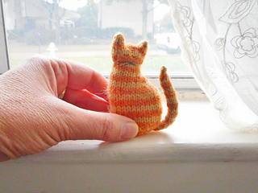
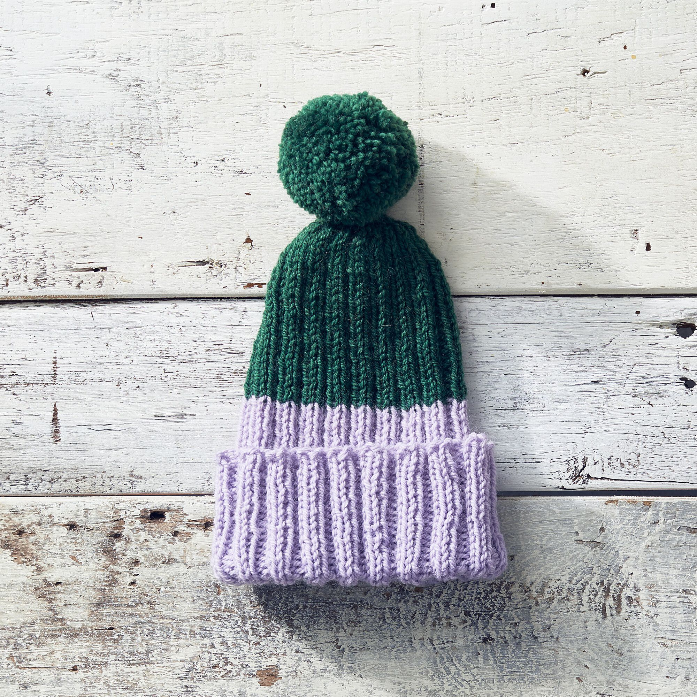
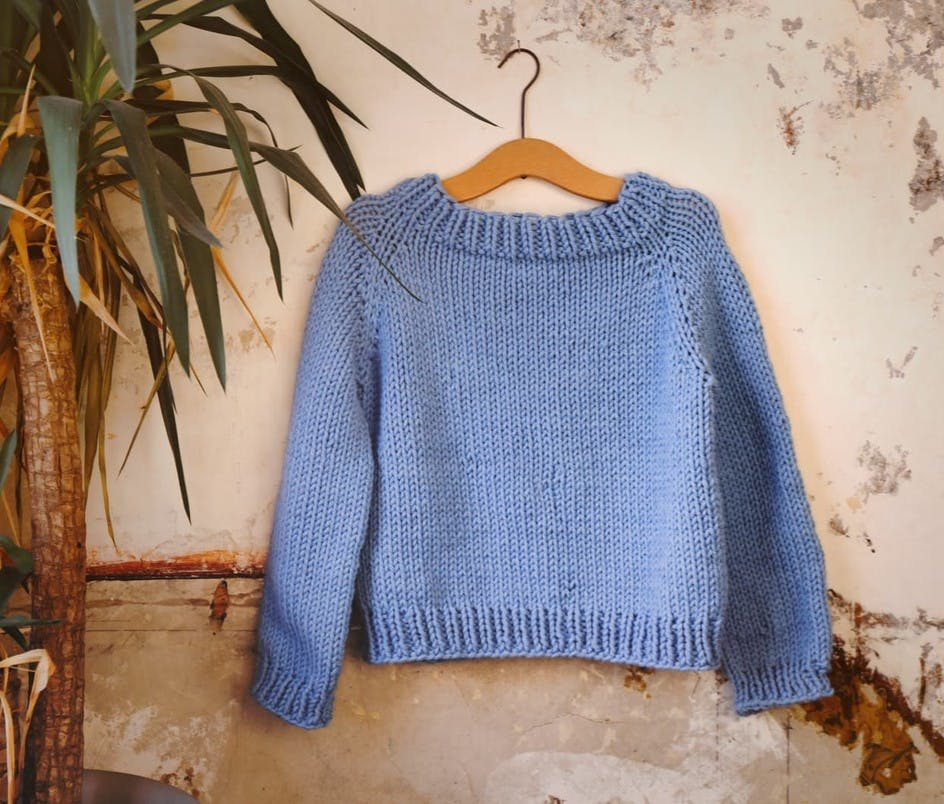

-
Tiny Window Cat
Knit this cute little kitty companion. Difficulty level: easy.
 -
Stitch Club Easy Peasy Knit Hat + Tutorial
Perfect for the winter. Knit some for your friends and family. Difficulty level: easy.
 -
Super Chunky Sweater
With super chunky yarn, this cute sweater shouldn't take too long to knit. Difficulty level: intermediate.
